Converting shapes into mesh
objects lets you blend colors in multiple directions within the shapes
for an aquarelle or airbrush effect. It’s easy to modify mesh
objects. You can add or remove colors from points on the mesh to adjust
the direction and amount of color blending.
This particular tutorial comes in three-parts – there is so
much material on mesh gradients to cover. Much of what is presented here is
in pictures that take up a lot of space. Their purpose is take make the
learning process easier than if everything was just plain text. As you go
through this tutorial and the artwork develops as you scroll down, the
imagery that you create might look similar enough to what you see here.
Absolute precision is not important — learning the methods and getting
the feel of working and playing with them is.
Make the Undo function your friend. If at first you don’t
succeed, undo and try, try again! If you feel that your brain is full, take a
break! I do. And, have fun!
In this tutorial, you’ll learn how to do the following:
Create a mesh grid.
Apply colors to a mesh.
Edit a mesh for a variety of effects.
Getting Started
In this tutorial, you’ll convert the shapes of two butterflies into
meshes, paint them, and manipulate the color blending. Before you begin, you
will open the finished art file for the tutorial to see what you’ll
create.
Start Inkscape.
Download file Tutorial13Aend.svg and store
it in a convenient location on your computer. Note that the file image might
look like one wing is missing when viewing it in its Internet source
location. There is a wing section — you might just be experiencing an
incompatibility between the viewing software in your browser and the flavor
of svg (scalable vector graphics) that Inkscape uses. Choose File
> Open, and open the Tutorial13_end.svg file. The missing wing
should appear (along with everything else in the file).
If you like, choose View > Zoom > Zoom Out to make the
finished artwork smaller, adjust the window size, and leave it on your
screen as you work. If you don’t want to leave the image open,
choose File > Close.
To begin working, you’ll open an existing art file.
Download file Tutorial13Astart.svg and store
it in a convenient location on your computer. Choose File > Open to open
it.
Start file for Tutorial 13A.
Choose File > Save As…, name the file Butterfly.svg,
and store it in a convenient location.
Introduction to the Mesh Tool
Creating gradients using the Mesh tool is both a science and an art. The
science aspect involves creating a mesh grid with which you will define the
geometry of the gradient borders and where different colors are to be
positioned. The art aspect involves your sense and sensibility of
manipulating the mesh grid so the colors look the way you want them in terms
of how they blend amongst each other to match what your imagination has
produced. The art of mesh gradients comes with experimenting, undoing and
redoing mistakes, and just playing with the possibilities that appear on
your mental computer screen.
First, you’ll paint a color on one of the tail wings on a butterfly.
You’ll start out with a simple mesh to get a basic feel for the Mesh
tool, and then you’ll paint the other tail wing with the same
colors.
Make a duplicate of the top butterfly’s lower left wing and
move it to a side of the artboard to work on.
Making a copy of the butterfly’s lower left
wing.
Rotate the wind so that the tip of its tail is at the midpoint of
the top line segment of the bounding box. This orientation will make it a
little easier to work with the Mesh grid.
Doing a preliminary step like rotating an object so its main axes of
symmetry line up with the x-axis and y-axis of the work window is a wise
thing to do. It makes grid manipulation easier and can give you clearer
insight into how you want to work with your coloration.
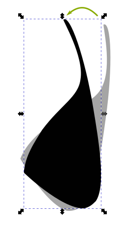
Rotating the butterfly’s lower left wing.
With the butterfly wing still selected (reselect if it isn’t),
click on the Create and edit meshes tool () in the toolbox. The Select tool cursor () turns into the Mesh tool cursor ().
Double-click on the edge of the wing (not inside the wing)
with the Mesh tool cursor to create the mesh grid.
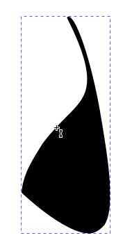
Placing Mesh tool cursor on edge of wing.
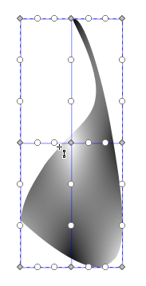
Double-clicking on the edge of the wing.
Notice that grid points in the selected object are either solid
diamonds or open circles. Also, the object has a mesh point at the
intersection of the two inside mesh lines, and two open circles between
each pair of mesh points. Mesh points define where the center of an area
of color is located.
The open circles are mesh handles that allow you to change the shape
of an area of color. By moving the circles, you move the boundaries
of an area of color to suit your preferences.
Each mesh point has at least two mesh handles associated with it. Mesh
points at the corners of the grid have two handles associated with them,
mesh points on the grid sides but not on the corners have three handles
associated with them, and mesh points inside the grid body have four mesh
handles.
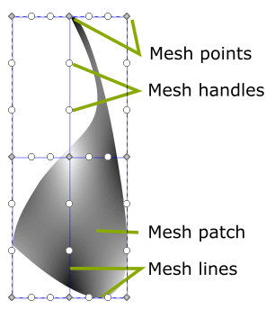
Anatomy of a basic grid.
Moving Mesh Points and Mesh Handles
Moving a Single Mesh Point
When you move a mesh point, you move the center of an area of color
associated with that center. The mesh handles associated with that mesh point
also move with that mesh point, keeping the same distance and orientation. As
a result, you move an entire area of color while maintaining its original
shape, size and orientation.
With the Mesh tool cursor () active, click on the middle mesh
point.
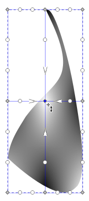
Clicking on the center mesh point.
The four mesh handles closest to the selected mesh point turn into
arrows, all pointing toward the mesh point. This feature is excellent
for indicating which mesh point they’re associated with. The arrows
have a black stroke and white fill so they will always be visible, no
matter what the underlying color is. The center mesh point is colored
blue, indicating that it is selected.
Click-drag the center mesh point to the center of the wing. It does
not have to be moved to the exact center. See how the white area underneath
the mesh point moves with the mesh point. Also note how the four mesh
handles, now arrows, move with the mesh point, maintaining their original
distance and orientation. Lastly, the central grid lines are now curved,
especially the horizontal grid line, to maintain connection with the center
mesh point.
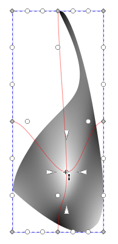
Moving the center mesh point.
Moving Multiple Mesh Points
By <Shift>-clicking on two or more mesh points with Mesh tool cursor
(), you can group-select them as if you were using the Select tool
() and moving them as a group.
Press <Ctrl>-Z to undo the move until you get to where you were
at Step 1 in the previous section with the middle mesh line straight across
(you might have to press <Ctrl>-Z more than once).
Now, <Shift>-click the three mesh points on the middle mesh
line to group-select them. All three mesh points turn blue to indicate that
they are selected.
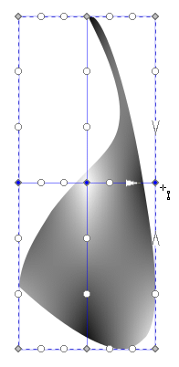
Shift-clicking the middle grid line mesh
points.
Click on any of the three blue mesh points with Mesh tool cursor
() and drag the middle mesh line straight down until it is a quarter of
the way up from the bottommost mesh point.
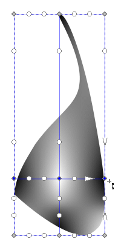
Moving the middle grid line down.
Note that the three mesh handles associated with the rightmost mesh
point on the middle mesh line are arrows, indicating that the rightmost
mesh point was the last one selected and that it is still selected and
active.
Click on the center mesh point. It will stay selected (it remains
blue). However, the two side mesh points will deselect. Now, click-drag the
center mesh point right to the middle of the wing shape (you don’t
have to be precise).
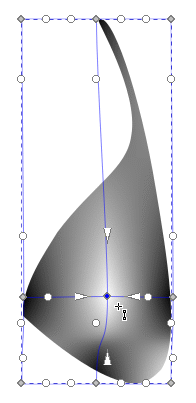
Selecting the center mesh point, deselecting the side
mesh points, and moving the center mesh point to the middle of the
wing shape.
Note how the white patch and mesh handles follow the mesh point.
The wind needs to have a black border and a deep purple center.
Making the black border is more challenging than making the purple center.
Also, by keeping the wing’ center white, it will be easy to shape
the black border by virtue of stronger color contrast, compared to working
with a deep or dark purple center and, thus, less contrast between
colors.
Start on the black border by moving the mesh handles associated with
the three bottom mesh points closer to their respective points.
Click on the bottom center mesh point. Its associated mesh handles turn
into arrows. Note that the bottom mesh points have their upper mesh
handles located above the mesh handles associated with the mesh points on
the middle mesh line. You can verify this upside-down orientation by
clicking on a mesh point on the middle mesh line and then clicking on a
bottom mesh point. This orientation happened when you moved the middle mesh
line down from its original central position in Step 3 above. The mesh
handles maintained their original relationship to their mesh points.
Move the mesh handles closer in for each mesh point on the bottom line.
Note that an arrow fill turns red when the mesh tool cursor hovers over
it.
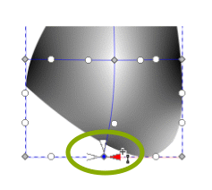
Mesh handles moved closer in to mesh point.
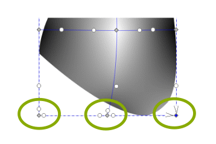
Bottom line mesh points now have handles moved in
closer.
The right-hand mesh handle is the last one moved in the first figure.
Its color fill is red because the mesh tool cursor is still hovering over
it.
The grey color in the lower right corner of the figure has become
subtley darker. The two mesh handles that belong to the bottom right mesh
point have been moved away from their original area of influence where
they help define a patch of white color. That white color patch still exists
but it is now more restricted to the very near neighborhood of its mesh
point, which is off the wing shape.
Move the bottom mesh points individually up to the wing figure so
that they bring the whole bottom mesh line up to closely approximate the
geometry of the that part of the wing. Note how the coloration changes in
response to the new placement of the mesh points with their close-in mesh
handles. Also, when a segment of the mesh line moves to inside the figure,
it creates a white-filled patch defined by the outer border of the figure
itself and the inner mesh line. You will correct this discrepancy in
painting shortly.
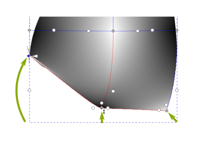
Moving the bottom line mesh points.
You will now paint the bottom edge of the wing black.
With the Mesh tool cursor () still active, click on the bottom left
mesh point to select it. Then, click on the black swatch in the Color
palette at the bottom of the work window. Select and paint the center and
right bottom mesh points black, also.
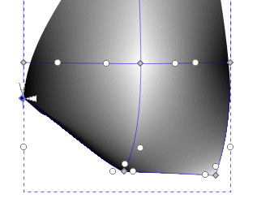
Left bottom mesh point painted black.
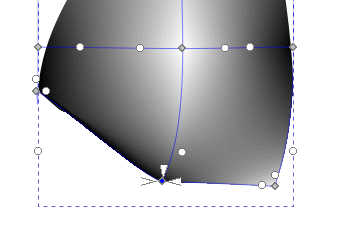
Center bottom mesh point painted black.
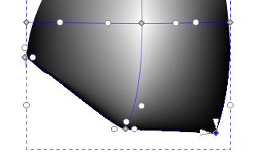
Right bottom mesh point painted black.
The bottom center mesh point was already painted black, but it
doesn’t hurt to make sure.
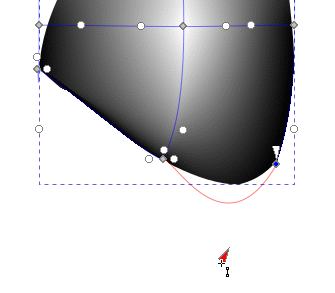
Pulling down right bottom mesh handle.
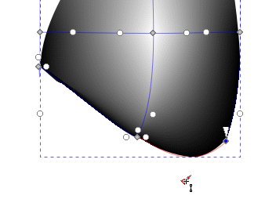
Fine-adjusting right bottom mesh handle.
Select the center bottom mesh point with the Mesh tool cursor ().
Click drag the right-hand mesh handle to verify that the curvature of the
curve segment between the center and right-hand points aligns with the curve
of the wing shape. It is alright if the grid curve is outside of the wing a
little bit. See how the handle arrow points along the curve, causing the
curve of the mesh grid to follow the curve of the wing at the point. You
will notice if the grid curve is inside the wing – because of the odd
area of white.
With the bottom center mesh point still selected, pull down the left-hand
handle to see the grid curve to the left. There is no difference in the grid
curvature when you pull the handle down, so release the mouse key and press
<Shift>-Z to undo the move and bring the mesh handle to its original
position.
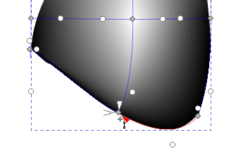
Fine-adjusting center bottom mesh handle.
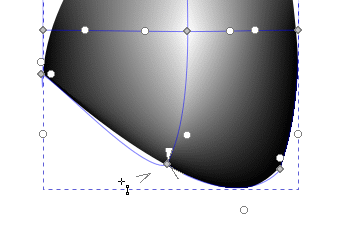
Pulling down center bottom mesh handle.
Now click on the left bottom mesh point to select it and activate its
handles. Click-drag the right-hand handle down. See how you eliminate a
little bit of grid overlap over the wing boundary. Move the handle so that
it is in line with the curvature of the wing.
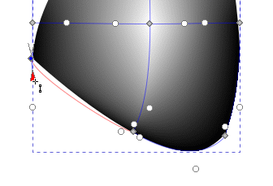
Pulling down left bottom mesh handle.
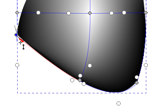
Fine-adjusting left bottom mesh handle.
You will now paint black edging on the middle portion of the
wing. Select the center mesh point on the right-hand mesh line with the
Mesh tool cursor () and then click on the black swatch in the Color
palette. Note how the black edging extends upwards to the mesh point.
Click-drag the lower mesh handle of the mesh point you just colored down
and to the right a little bit to extend the mesh line’s curvature out
from the boundary of the wing shape. Note how the handle’s direction
remains focused on its associated mesh point.
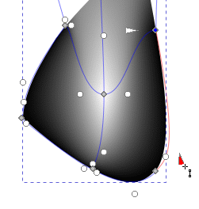
Coarse-adjusting the lower right-side grid
line.
Fine-adjust the mesh line at its lower end so it hugs the curve of
the wing shape.
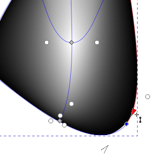
Fine-adjusting the lower right-side grid line.
Magnify and adjust the area of work as you see fit.
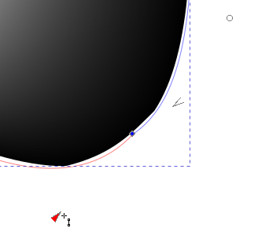
Fine-adjusting the lower right-side grid line.
You’ll now fine-tune the center mesh point on the left-hand
mesh line. Pull out the mesh line from the center mesh point using the
left-hand mesh handle to gauge what you’re going to do next.
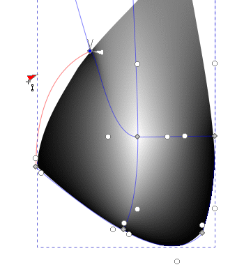
Pulling out the lower left-side grid line.
Move the mesh handle in and down until the mesh line lies directly
on top of the wing shape curve.
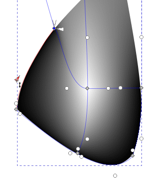
Fine-adjusting the lower left-side grid line.
Use the upper mesh handle of the bottom left mesh point to make very
fine adjustments to the left at its lower end.
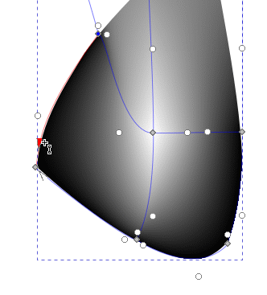
Fine-adjusting the lower left-side grid line.
Repeat Steps 15 to 17 for the center mesh point on the right-hand
mesh line.
Coarse-adjusting the lower right-side grid
line.Fine-adjusting the lower right-side grid line.
You will now paint the wing tail.
Magnify the area at the top of the mesh grid to see the mesh layout
better.
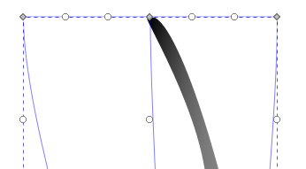
Magnified view of the wing tail.
Click on the left-hand mesh point and then click on the black swatch
in the Color palette to set the point’s color to black. The mesh
point is far enough away from the wing tail that its contribution to the
black edging is not noticeable. You’ll change that situation
shortly.
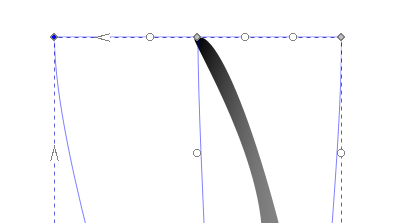
Painting the left side of the wing tail black.
Click on the center mesh point and then on the black swatch to set
this point’s color to black. Again, no discernible change.
Painting the center (tip) of the wing tail
black.
Repeat the previous step on the right-hand mesh point. Now you see
discernible progress!
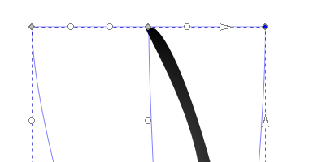
Painting the right side of the wing tail black.
The image below is what you have created so far.
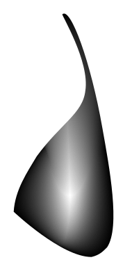
The whole lower right wing as it is painted
now.
Now you’ll change the curvature of the left, center, and right
mesh lines so that they’ll conform to the geometry of the wing tail.
By creating a color fill to the tail this way, you will have better control
over how colors blend from one to another inside the mesh grid, and thus,
inside the wing.
First, magnify the top area of the mesh grid so you’ see better
what you’ll be doing.
Then, move all the mesh handles inward toward their respective mesh
points. You’ll be moving mesh points, so you’ll need to keep
mesh handles together in distinct and recognizable groups to keep them
manageable.
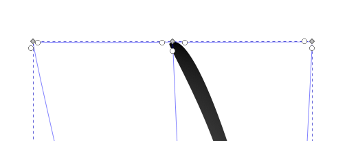
Magnifying the wing tail to move mesh handles close to
their mesh points.
Move the left and right mesh points in toward the center mesh point
to start moving the left and right mesh lines in toward the wing tail.
Note that the right mesh line cuts into the wing tail, slicing off part of
its length. You’ll take care of that shortly.
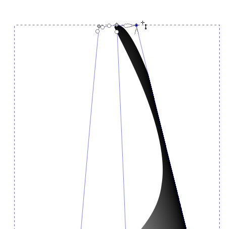
Moving wing tail mesh lines in so they converge near the
tail tip.
You will now do some coarse-adjusting of the right-hand mesh line.
Click-drag the lower mesh handle of the right mesh point down and to the
right a little to get a feel for how that handle affects the placement of the
mesh line. Also, see how the mesh line differentially slices off the right
side of the wing tail as you move the handle.
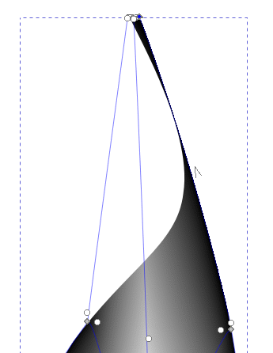
Current right-hand mesh line cutting off part of wing
tail.
Move the mesh handle up, noting how the curvature of the mesh line
changes as you approach the upper mesh point. Once you see that the mesh
line has moved away from the wing tail so the tip appears in its entirety,
you can stop moving the mesh handle. The mesh line now conforms much better
to the geometry of the tail tip, and the tip is all black.
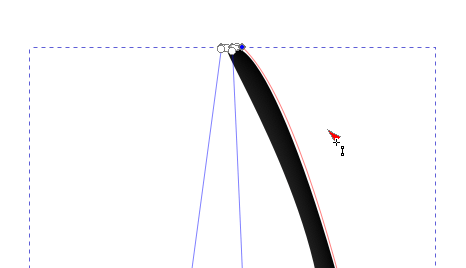
Moving the right-hand mesh line out of the wing shape and
manipulating its curvature to match that of the wing.
Fine-adjust the right mesh line by adjusting the upper mesh handle
that belongs to the center right-side mesh point.
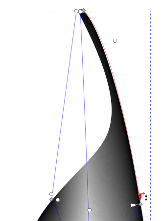
Fine-adjusting the curvature of the lower part of the
right-hand mesh line.
A good next step is to change the orientation of the central ray of
white color fill that comes out and up from the central mesh point. You
want the direction of the ray to follow the general inclined upward trend
of the wing shape.
To start, move the mesh handles of the central mesh point in close.
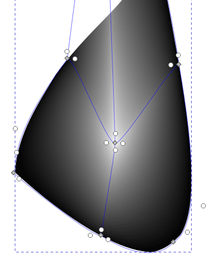
Bringing mesh handles in to near proximity of the central
mesh point prior to moving.
Magnify the top of the mesh grid so you can see the top center mesh
point and its handles clearly. Click-drag the lower mesh handle of the top
center mesh point down, following the curve of the wing tail. Again, note
how the mesh handle, now a red active arrow, stays pointed toward its
associated mesh point.
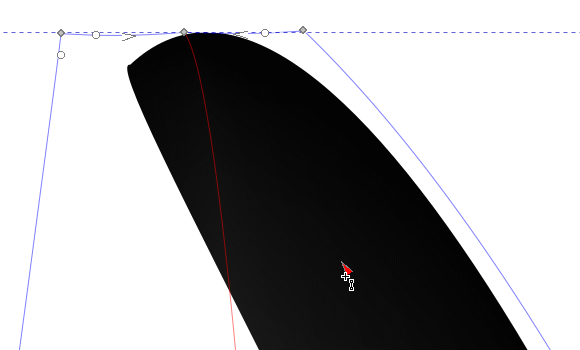
Magnifying the wing tail tip to help move the center
vertical mesh line.
Move the mesh handle down to the base of the wing tail.
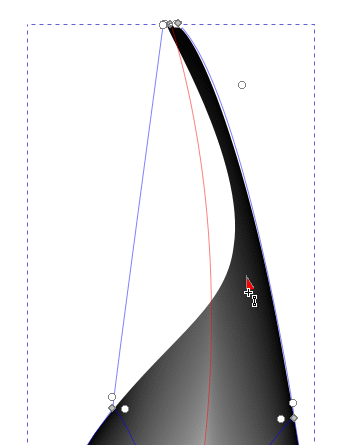
Bringing the mesh handle down to extend the black fill of
the wing tail.
Now, click-drag the upper mesh handle of the central mesh point up
towards the mesh handle at the base of the wing tail. Note how the white
fill ray follows the mesh handle as you bring the handle up to the base of
the tail.
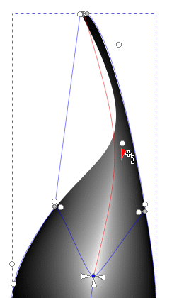
Bringing the “north” central mesh handle up to
reorient the upward-pointing ray of white fill.
The upper part of the central mesh line lies outside the wing tail.
To bring it inside and more in line with the tail geometry, click-drag the
mesh handle belonging to the upper center mesh point to the right. Fine-tune
using the mesh handle belonging to the central mesh point. You might find
yourself alternately moving both mesh handles until you get a good-trending
center vertical mesh line. The figure below provides a good idea of what
you’re striving for.
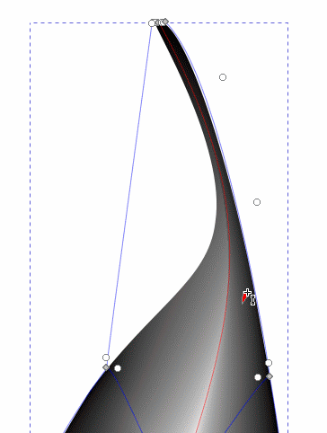
Pulling the central mesh line to the right to
conform with the wing tail curvature.
Now do the left mesh line. Click drag the upper mesh handle of the
left center mesh point up and to the right to bring the mesh line (now a
curve) closer to the wing tail.
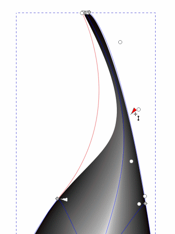
Pulling the left-hand vertical mesh line to the right to
define the left extent of the mesh grid.
You just did coarse adjustment of the left mesh line. Do fine
adjustment now using the lower mesh handle belonging to the left upper
mesh point. You’ll get very close to following the wing tail’s
left boundary but not exactly – and that is just fine.
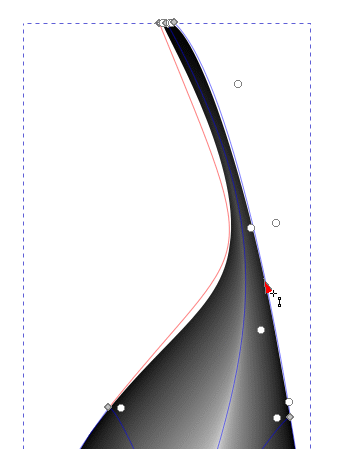
Fine-adjusting the curvature of the left-hand mesh
line.
The upper part of the ray of light looks good. Let’s turn our
attention to the ray below the central mesh point.
Move the bottom center mesh point to the left a little bit along the
curvature of the wing bottom until you see continuity of curvature of the
ray through the central mesh point. Adjust the mesh handles as you
see fit.
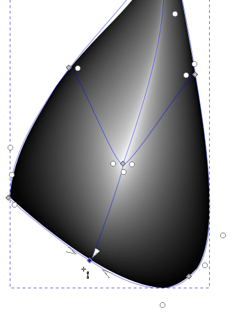
Moving and fine-adjusting the bottom center
mesh point and handles to smoothen the path of the central ray of
white fill.
Click off the artwork to deselect it so you can see and appreciate
your artwork up to this point.
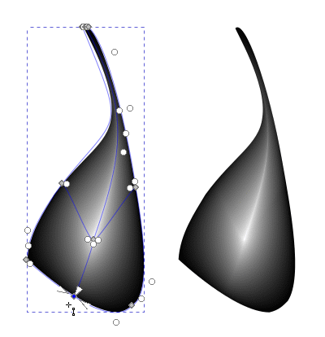
Wing tail with and without mesh details
visible.
It’s time now to color the center of the wind a dark
purple.
Click on the central mesh point with the Mesh tool cursor ().
If the Fill and Stroke panel isn’t up, choose Object > Fill and
Stroke…, click on the Fill tab, and type 0482bcff into
the RGBA text box in the Fill panel. Press <Enter> when
you’ve typed it all in.
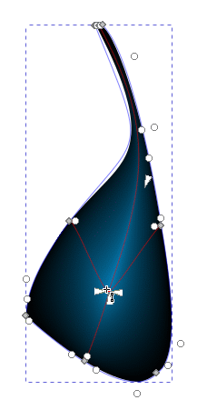
Selecting the central mesh point and giving it a deep
purple fill color.
Click off the artwork to deselect it so you can view the change in
coloration without the distraction of the mesh details.
Wing tail without mesh details visible.
The area of purple needs to be expanded. Click on the wing with the
Mesh tool cursor (), and click-drag each mesh handle away from their
central mesh point until the purple fills the available space up to but not
including the black edging, so that, of course, there is still black
edging.
Extending down the purple color patch by moving the left,
bottom, and right mesh handles down and out from the central mesh
point.
Move the side mesh points and their handles to fine-adjust the
geometry of the purple patch as your taste suggests.
Fine-adjusting the purple color fill using mesh handles
of both the left and right side mesh points.
Press <Esc> to deselect your artwork and view it without the
clutter of the mesh details.
Result.
File > Save.
Adding a Mesh Line to the Mesh Grid
On many an occasion, you will want or need to add a new color to the mesh
grid because the artwork requires it. You will learn how to add a horizontal
mesh line in this section.
Click on the Create and edit meshes tool () in the toolbox. Do not click on the Create and edit
gradients icon (). If you do, undo what
you did using <Ctrl>-Z or by clicking on the Undo tool ().
Double-click halfway up the central vertical mesh line to create
a new horizontal mesh line.
With the new mesh point still selected, choose Object > Fill and
Stroke…, click on the Fill tab, type 0c429cff into
the RGBA text box, and press <Enter> to set the new color, an
even darker purple near the base of wing tail.
Adding a mesh point and coloring it.
Adjust mesh points and mesh handles as you see fit to create the
areas of color that you want to see in your artwork.
Adjusting mesh points and mesh handles.
Press <Esc> to deselect the artwork.
Result.
You will now make a duplicate lower right wing and make a
mirror-image of it.
Select the wing with the Select tool ().
Click on the Flip selected objects horizontally icon () in the Tool Controls Bar to create the
mirror image of the wing.
Mirror-image wings.
Move the mirror-image duplicate wing to near the original black
wing.
Moving the duplicate lower right wing.
Move and rotate the wing until you completely superimpose it on
the black original. Use all means that you have learned up to this point to
place and orient it to satisfaction.
Moving the duplicate lower right wing.Rotating the duplicate lower right wing.
Press the <PgDn> key once or twice to lower the wing so it
will lie underneath the black original. Then, press <Delete> to delete
the black wing and make the colored wing visible. If the colored wing lies
on top of the right forward wing, then select it, if it isn’t already
selected, and press the <PgDn> key once or twice so it will lie
underneath the forward wing.
Moving the duplicate lower right wing.
Repeat Steps 5, 6, and 7 for the left bottom wing.
Moving the duplicate lower right wing.
Your artwork might not look exactly like the figure below. That is
just fine. It is important that you have a feeling for how to create and
edit grid meshes using mesh points and mesh handles.
Finished tutorial artwork.
File > Save. File > Close. Exit Inkscape if your desire.
You will use your artwork in the next tutorial, where you will learn other
gradient mesh techniques that further enhance your ability to create imagery
that falls pleasantly on the eyes.
Explore using different gradient colors, moving mesh points and handles
around to alter the shapes of color patches. If you don’t like what you
just did, use <Ctrl>-Z or the Undo tool () to undo your mistake
so you can start over.
Review Questions
Which icon do you click on to create a new gradient mesh?
What is the function of a gradient mesh point? What is the function
of a mesh handle?
Review Answers
You click on the Create and edit meshes tool () in the toolbox.
A gradient mesh point acts a center point for the creation of a
patch of color. A gradient mesh handle allows you to stretch, contract, and
change the direction into which a color patch extends.


{kind=link}
{kind=link}

 ) in the toolbox. The Select tool cursor () turns into the Mesh tool cursor (
) in the toolbox. The Select tool cursor () turns into the Mesh tool cursor ( ).
).
 ). If you do, undo what
you did using <Ctrl>-Z or by clicking on the Undo tool (
). If you do, undo what
you did using <Ctrl>-Z or by clicking on the Undo tool ( ).
). ).
Click on the Flip selected objects horizontally icon () in the Tool Controls Bar to create the
mirror image of the wing.
).
Click on the Flip selected objects horizontally icon () in the Tool Controls Bar to create the
mirror image of the wing.